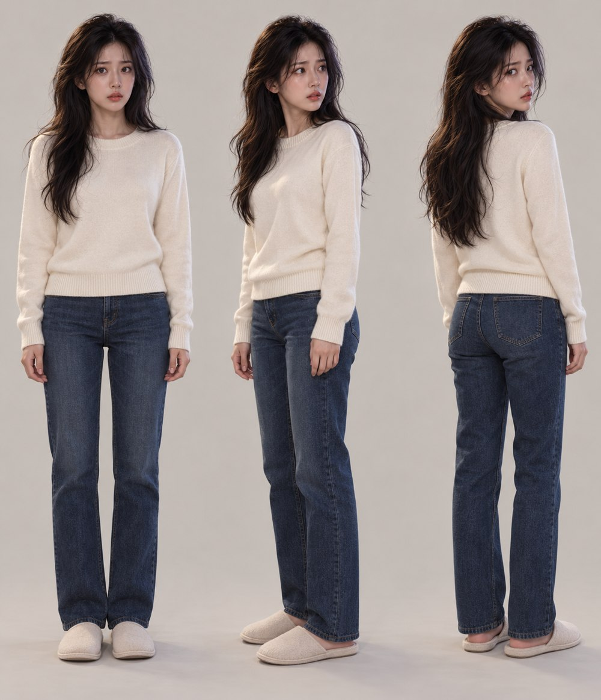
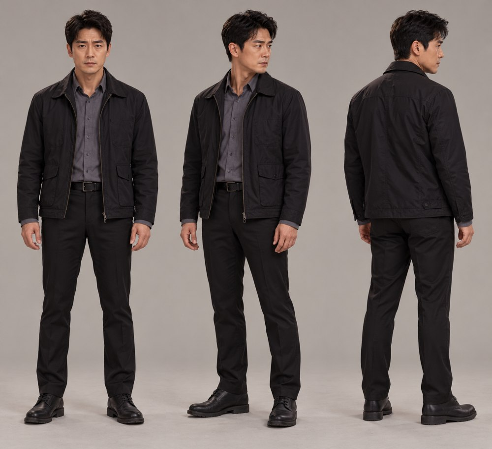
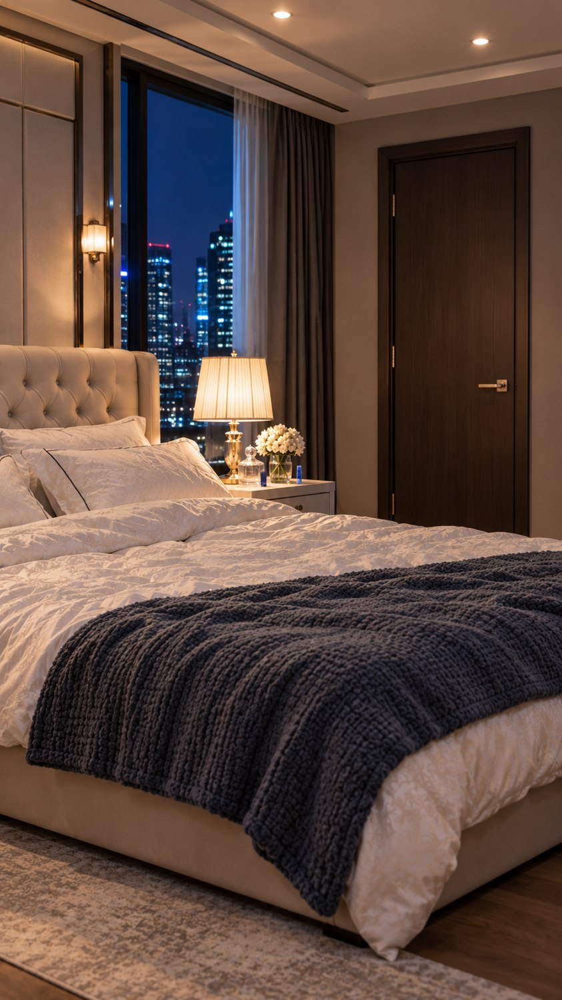

수사의 일부분
영상 생성의 기본 참조는 새 배우 2명과 침실 배경입니다. 유나는 침입 순간에만 잠옷이고, 형사가 온 조사 장면부터는 평상복입니다.
01 · 유나 / 조사 장면 평상복

크림색 니트·청바지. 잠옷 장면과 같은 배우 얼굴.
02 · 형사 배우 정본

차콜 재킷·회색 셔츠. 이번 회차 새 배우.
03 · 불 켜진 침실 배경

경찰 도착 후 조명이 켜진 같은 침실.
이 세 이미지로 H3 Omni 첫 대사 컷을 다시 제작 중입니다.